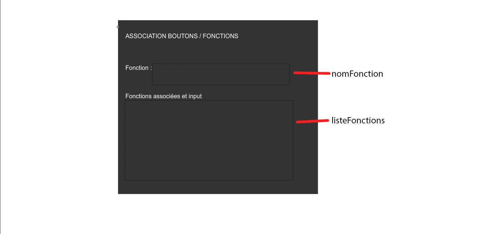

Catégorie Composants interactifs physique / programmation
Date 16/02.15
Introduction
Les claviers interactifs pour installations musicales disponibles sur internet sont bien souvent soit de piètre qualité, soit absolument hors de prix. La fabrication maison semble alors une réponse efficace, esthétique et peu coûteuse à la question. Cela dit, un autre problème y est sous-entendu, souvent bien trop ignoré : s’assurer de pouvoir, de façon dynamique (par exemple la journée même d’une présentation), associer les touches du clavier ainsi fabriqué à des fonctions distinctes.
Le présent tutoriel sera donc divisé en trois parties se suivant plus ou moins logiquement : dans un premier temps, nous modifierons un bouton acheté en magasin pour qu’il convienne à nos besoins. Par la suite, nous monterons un clavier en utilisant les boutons ainsi modifiés. Finalement, nous délaisserons le matériel physique pour s’attaquer, à l’aide du logiciel Flash d’Adobe, à l’épineuse question de l’association.
À la fin de ce tutoriel, vous aurez donc un clavier numérique de douze touches carrées en bois, qui, à l'aide du code développé, pourra être branché et rapidement fonctionnel et ce, n'importe où.
Vous aurez besoin de...
Matériel
* Vous pouvez vous procurer ces éléments chez Addison à un prix minimal.
Outils


Le tutoriel
Partie 1 : Modifications esthétique d’un bouton
1.1 Dans la planche de bois mince, couper 12 carrés de 3,5 cm par 3,5 cm.
1.2 Si désiré, peindre les touches de bois ainsi obtenues. Laisser sécher.
1.3 Coller les touches aux boutons.
Partie 2 : Montage du clavier
2.1 Couper 24 sections de fil conducteur de 15 cm chaque.
2.2 Fixer les fils aux boutons (voir image ci-dessous).

2.3 À l’aide de la perceuse, percer 12 trous dans une des deux planches de la console conformément au plan suivant. Les trous sont de 1,5cm de diamètre, chacun étant séparé par 2,5cm.

2.4 Installer les deux planches une au-dessus de l’autre (celle avec trous en haut) en les séparant de quatre piliers aux coins d’environ 8cm de haut. Visser.
2.5 Doucement insérer les boutons dans les trous correspondants.

2.6 Pour chaque fil, insérer une extrémité dans une ouverture du phidget et l’autre dans le ground (GND).
2.7 Brancher le fil USB du phidget dans l’ordinateur.
Partie 3 : Programmation d’une association dynamique
La logique du programme que nous créerons ici est plutôt simple. Dans un premier temps, une interface visuelle informe l'utilisateur du présent son à associer. C'est alors à l'utilisateur d'appuyer sur un input du clavier numérique. Le code associera ce son et le numéro de l'input. Le programme passe automatiquement au prochain son, ainsi de suite. Lorsque tous les sons ont été associé, le programme se ferme alors. Pour le bénéfice du test, notre présent code instanciera alors une fonction-exemple qui jouera les sons associés.
Notez-bien : le code que nous construirons se destine à une utilisation back-end. Il n'est donc pas à l'épreuve de l'utilisation inconsidérée d'un utilisateur inconscient.
3.1 Dans Flash, créer la classe de Document, que nous nommerons ici Application. S’assurer de bien la lier et de la sauvegarder au bon endroit.
3.2 Créer une autre classe, nommée Btn_Fn. Elle aura pour rôle de stocker les informations propre à chaque bouton.
3.3 Rapidement créer une interface suivant le modèle suivant. Respecter les noms des champs de texte. Dans le bibliothèque, clic droit > Propriétés… > cocher ‘’Exporter pour ActionScript’’. Lui donner le nom de classe FenetreAssociation.
3.4 Instancier les variables suivantes :
// L'interface
public var maFenetreAssociation: FenetreAssociation;
// Référence à la classe Btn_fn
public var btn: Btn_Fn;
// Objet de la librairie Jmulator qui détectera les inputs
public var emu: IpacVe = new IpacVe(stage);
// Liste des fonctions/sons à assigner
public var nbrFnAssigner: Array = [],
// Tableau où se fera l'association input - fonction
tblBtnAssigner: Array=[],
// Tableau où les sons seront déposés
tblSons:Array=[] ;
public var numeroActuel: int = 1; // Servira de vérificateur pour une pseudo-boucle
3.5 Créer une fonction nommée InstancierAssociation. En faire l’appel dans le constructeur.
3.6 Cette fonction aura 3 principaux rôles : monter le tableau indiquant le nombre de fonctions à assigner, instancier l’interface et gérer la détection des touches.
public function instancierAssociation(): void {
//1. Nombre de fonctions à assigner
for(var a:int=1; a<13; a++)
{
nbrFnAssigner[a]='Son'+a;
}
//2. Instancier la fenêtre d'association
maFenetreAssociation = new FenetreAssociation();
addChild(maFenetreAssociation);
maFenetreAssociation.x = stage.stageWidth / 2 - maFenetreAssociation.width / 2;
maFenetreAssociation.y = stage.stageHeight / 2 - maFenetreAssociation.height / 2;
maFenetreAssociation.nomFonction.text = nbrFnAssigner[numeroActuel];
//3. Gestion des interactions
var emu: IpacVe = new IpacVe(stage, true, EmulatorTriggerMode.TRIGGER_ON);
// Crée un nouvel objet IpacVe (phidget virtuel). stage le lie sur la scène, tandis que les deux autres paramètres s'assurent de ne l'activer que sur la pression et non lorsque relaché.
emu.addEventListener(IpacVeEvent.ANY_INPUT, assign); // Le addEventListener appellera la fonction assign() sur réception de n'importe quel input.
}
3.7 Dans la classe Btn_Fn, préparer le constructeur à recevoir deux paramètres, l’input et la fonction correspondante. Stocker ces deux paramètres dans des variables publiques nommées respectivement input et fonction.
3.8 Créer la fonction assign() appelée par le addEventListener précédent. Cette fonction suit un ordre logique if > else if > else qui englobent à eux trois toutes les opérations.
La logique : la fonction à assigner est affichée. Lorsqu’un utilisateur presse un input, celui-ci est associé à la fonction dans une classe de document qui sera stockée dans un tableau, puis la prochaine fonction est choisie.
Lorsque son travail est accompli, elle transfère alors son addEventListener sur une autre fonction qui se chargera pendant l’utilisation future de faire le lien input-sons.
public function assign(e: IpacVeEvent): void {
// Crée un nouveau bouton et lui associe un input et une fonction, puis l'insère dans un tableau
if (numeroActuel < nbrFnAssigner.length) {
btn = new Btn_Fn(e.input, nbrFnAssigner[numeroActuel]);
tblBtnAssigner[e.input]=btn;
maFenetreAssociation.listeFonctions.appendText(nbrFnAssigner[numeroActuel] + ' associée avec ' + e.input + '\n');
numeroActuel++;
maFenetreAssociation.nomFonction.text = String(nbrFnAssigner[numeroActuel]);
} // Si toutes les fonctions sont associées, l'opération prend fin et le prochain input de l'utilisateur fermera la fenêtre.
else if (numeroActuel == 100) {
trace('close');
e.currentTarget.addEventListener(IpacVeEvent.ANY_INPUT, lienFonctions);
removeChild(maFenetreAssociation);
e.currentTarget.removeEventListener(IpacVeEvent.ANY_INPUT, assign);
} // Montre le message confirmant que toutes les fonctions ont été associées
else {
maFenetreAssociation.nomFonction.text = 'Toutes les fonctions ont été assignées \n appuyez sur un bouton pour fermer';
numeroActuel = 100;
}
}
POUR TESTER
3.9 Trouver et sauvegarder dans un dossier ‘’sons’’ 12 sons nommés Son[1-12].
3.10 Créer une fonction de chargement de sons. Ne pas oublier de l'appeler dans le constructeur
public function chargerSons():void{
for(var i:int=1; i<9; i++)
{
var snd:Sound=new Sound();
var channel:SoundChannel = new SoundChannel();
var req:URLRequest= new URLRequest('sons/Son'+i+'.mp3');
snd.load(req);
tblSons[i]=snd;
}
}
3.11 Créer la fonction lienFonctions(e: IpacVeEvent). Lorsqu’elle reçoit un input, elle en identifie le code et cherche une fonction qui y correspondrait.
public function lienFonctions(e: IpacVeEvent): void {
var numSon:int;
if(tblBtnAssigner[e.input].fonction.length==4)
numSon=parseInt(tblBtnAssigner[e.input].fonction.slice(3,4));
else
numSon=parseInt(tblBtnAssigner[e.input].fonction.slice(3,5));
tblSons[numSon].play();
}
3.12 Exécuter le code.
Sur l'auteur
FÉLIX LEBLANC / Étudiant au cégep en Multimédia et bientôt à l’université en Science Politique, je suis un mordu de création et de sciences sociales. Depuis toujours déchiré entre un penchant créatif contrastant avec ma profonde passion pour la lecture, l’écriture et l’analyse politique, je tente de partager équitablement mon temps entre ces intérêts et le plein air.